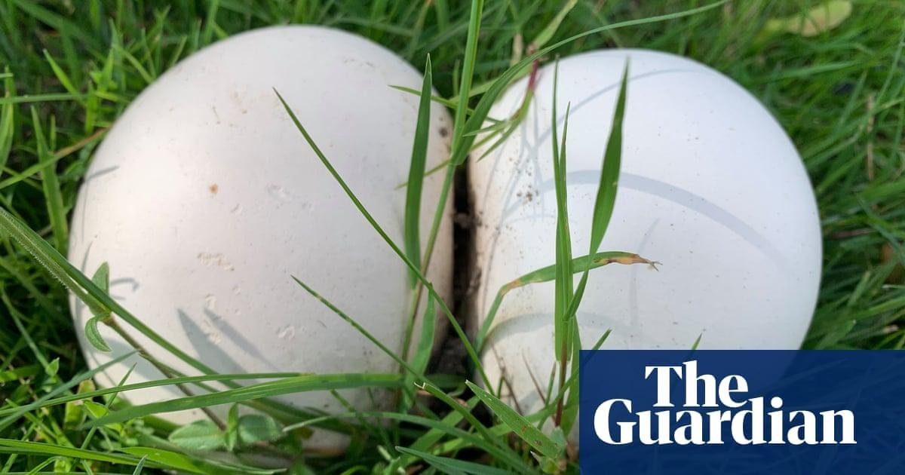

Country diary: Puffball pizza for dinnerIs it a human skull, hidden in the woods, or maybe a leathery old football kicked into the long grass? The big white orbs of giant puffballs appear as if by magic, somehow always surprising. Today’s find looks like a behind. Two mushrooms have grown close together, with a cleft dividing a pair of plump cheeks. I carry them home proudly, like a hunter-gatherer’s good day at work, my arms full, holding these pale buttocks. The sweet fungus scent fills my nostrils. The cool, soft weight presses against my chest. Tonight, we will be eating this prize. To me, giant puffballs are easily recognisable. I’m confident of its identification if it is bigger than an orange and purest white throughout. They can grow even larger than your head, although as it matures, the flesh yellows and it becomes inedible. Inside a large, mature puffball, when it has turned brown and dry, there can be more than a trillion spores. Which suggests we should be living in a mass of mushrooms – but they are a Goldilocks species, requiring such specific conditions that very few spores germinate. It’s foraging heaven right now. The hedges are full of blackberries for muffins, sloes for making sweet purple gin to drink on dark nights, elderberries for cooking with apples, and rosehips, if you have the patience to make the vitamin-C-rich syrup. I’m not the only one collecting. I watch a jay at work. Normally shy, it has matched its exotic looks – that buff pink body, tufted head, flash of blue – with jaunty behaviour today, hopping along, seeking acorns to bury. Jays cache hundreds of acorns each autumn to keep them going in the winter. They are pretty good at recalling the location of their hoards, but inevitably some grow. It’s a symbiotic relationship that means the young oaks planted away from the shade of the parent will flourish, and thus provide acorns for jays into the future. Back home, I slice up my bum‑shaped mushroom to make puffball pizza, toasting the discs then grilling tomato, cheese and olives on top. With its mild flavour and spongy texture, it’s also good in risottos, or fried in garlic butter. My autumn rituals keep winter at bay. Comments (…) Sign in or create your Guardian account to join the discussion |
 |